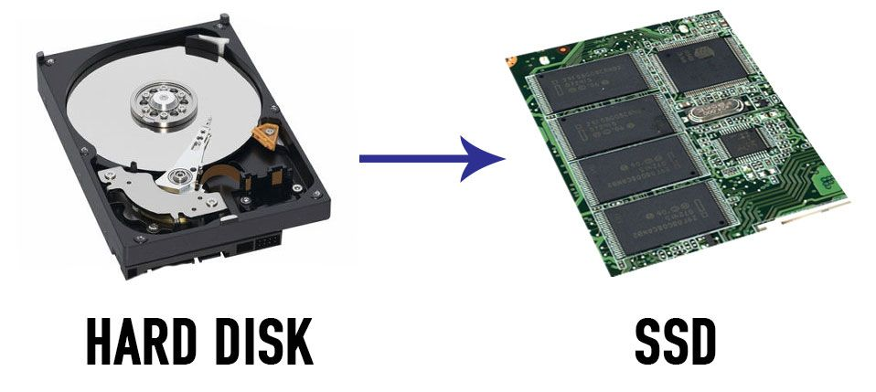

SSD

Un disco rigido o disco fisso – nonché denominati con le locuzioni inglesi hard disk drive[2] (abbreviato comunemente in hard disk e con le sigle HDD, HD), o raramente fixed disk drive - in elettronica e informatica indica un dispositivo di memoria di massa di tipo magnetico che utilizza uno o più dischi magnetizzati per l'archiviazione di dati e applicazioni (file, programmi e sistemi operativi). Il disco rigido è un dispositivo di archiviazione del computer ed è uno dei tipi di dispositivi di memoria di massa attualmente più utilizzati essendo presente nella maggior parte dei computer ed anche in altri dispositivi elettronici, come per esempio il PVR. È stato per lungo tempo l'unica scelta sui personal computer, ma sta conoscendo una perdita di quote di mercato a favore delle più recenti e veloci,ma anche più costose,unità a stato solido (SSD, Solid State Drive). Il disco rigido è costituito fondamentalmente da uno o più piatti in rapida rotazione, realizzati in alluminio o vetro, rivestiti di materiale ferromagnetico e da due testine per ogni disco (una per lato), le quali, durante il funzionamento "volano" alla distanza di poche decine di nanometri dalla superficie del disco leggendo o scrivendo i dati. La testina è tenuta sollevata dall'aria mossa dalla rotazione stessa dei dischi la cui frequenza o velocità di rotazione può superare i 15.000 giri al minuto; attualmente i valori standard di rotazione sono 4.200, 5.400, 7.200, 10.000 e 15.000 giri al minuto.